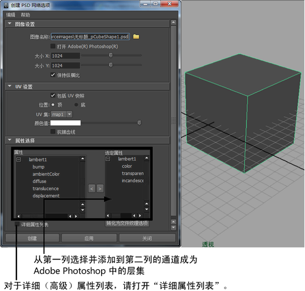

从 Maya 内部创建 PSD 文件时，请选择要在 Adobe Photoshop 中绘制的通道。
然后，这些通道在 Adobe Photoshop 中表示为层集，并且您可添加、编辑或删除层集中的任意层（请参见将 PSD 网络用作 Maya 中的纹理）。更新 PSD 节点时，所有在 Adobe Photoshop 中做出的更改都将传输回 Maya 内的相应通道中（请参见更新 PSD 网络）。

注：
可选 UV 快照可作为指南，帮助您绘制出具有更高精确度的纹理。在 Maya 中创建分层 PSD 文件时，可创建 UV 快照。
在 Maya 中创建并使用分层 PSD 文件
- 确保 UV 在 0 到 1 纹理空间内拟合，并选择所需的材质（例如，“Phong”之类材质）。
- 选择要绘制的对象。
- 选择纹理 > 创建 PSD 网络(Texturing > Create PSD Network)。
此时将打开“创建 PSD 网络选项”(Create PSD Network Options)窗口。
- 为要创建的 Adobe Photoshop 文件键入名称，并设定任一选项（或使用默认设置）。
- 在“属性”列表中，双击要绘制的属性并将其添加到“属性”列表。对要包括的其他属性，重复上述操作。如果要绘制列表中未显示的属性，请启用“详细属性列表”(Detailed Attribute List)。
- 选择“创建”(Create)。
这样，Maya 就为要绘制的选定属性创建了一个带层集的空 PSD 文件。背景色源于材质。
- 在项目的 sourceimages 目录下找到 PSD 文件。
- 在 Adobe Photoshop 中打开文件。
- 每个要绘制的属性都由一个层集表示，而且您可根据自己需要的数量在给定层集中任意添加或删除层。Maya 将每个层集当做一个单独的展平图像处理，并使用材质的基础颜色。
- 如果要选择包括 UV 快照，该快照将作为绘制参考插入到最顶层。（该层对渲染没有帮助。）
- 在 Adobe Photoshop 中对层进行绘制，然后保存文件。
- 在 Maya 中，选择纹理 > 更新 PSD 网络(Texturing > Update PSD Networks)。
每个 PSD 图像文件层集均由一个附加到 PSD 文件节点的独立节点表示。